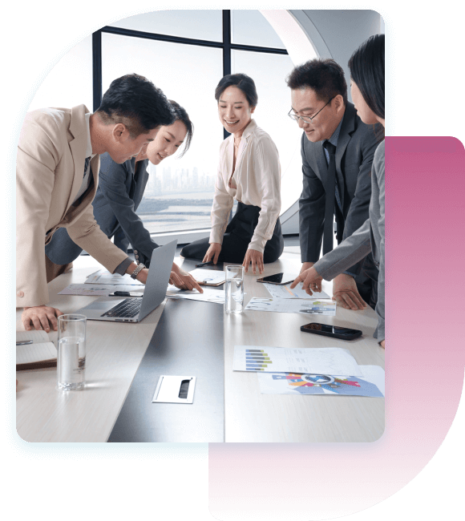
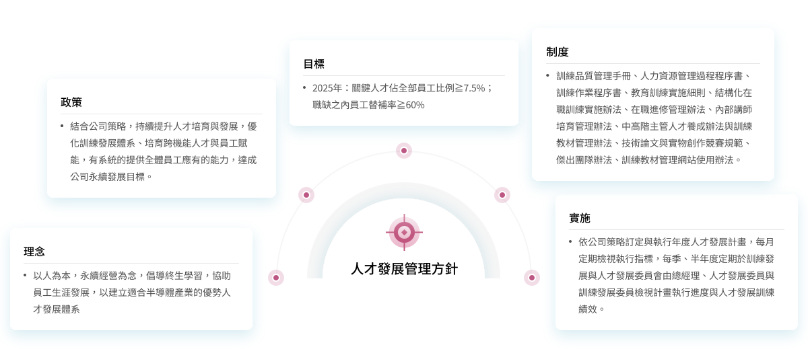
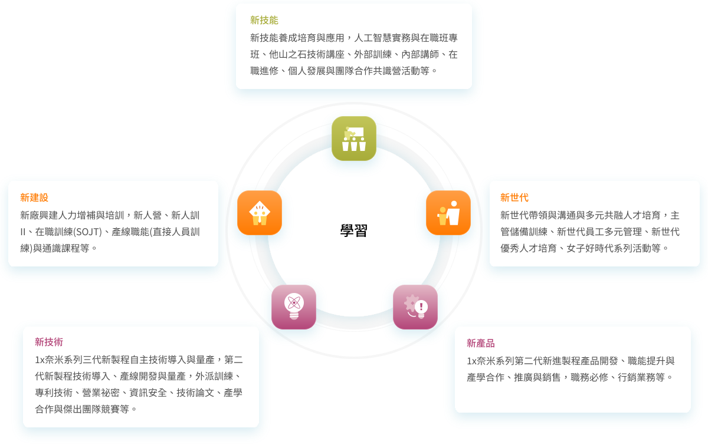
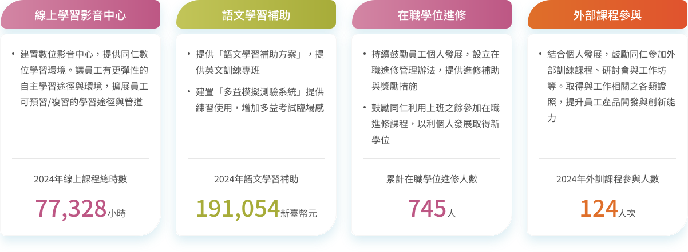
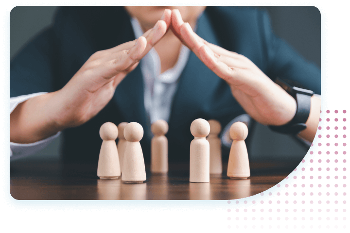
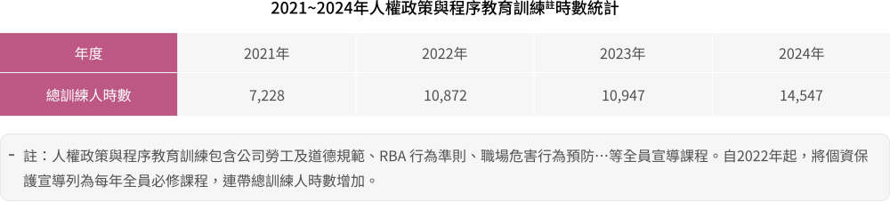
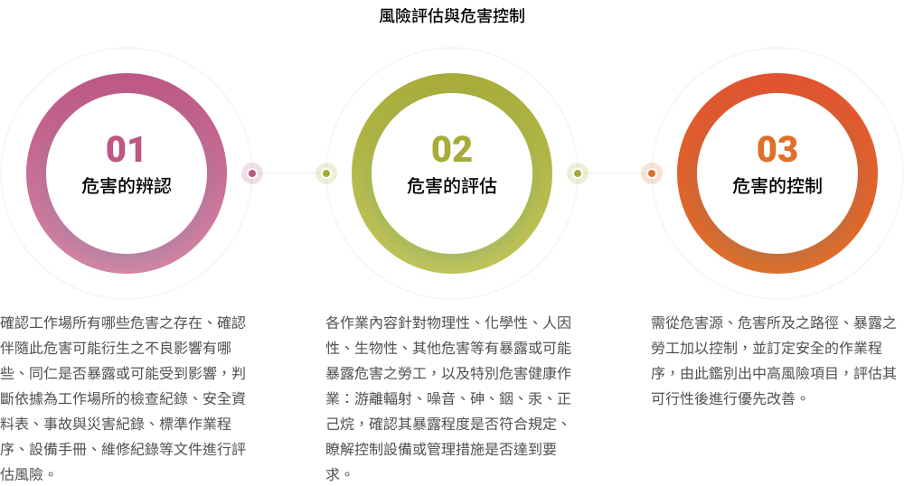

人才 重視專業人才的雇主
人才是南亞科技創新的碁石，本公司重視人權、多元共融、人才發展，透過人才留任與培育，保有競爭優勢，並持續收集員工意見，重視職場安全與營造友善職場，以此打造安心職場，實現我們的永續經營目標。
- 青年培力擴大半導體人才，較2023年成長 40 ％
- 儲備主管留任率 98 ％
- 育嬰留停復職率 81.48 ％
重大議題策略與績效
人才永續與多元聘僱
員工是南亞科技最重要的夥伴，也是維持公司永續營運與創新研發的關鍵能量。深植以人為本的文化，我們打造人性化且舒適的辦公環境，以員工學習為中心建構教育訓練課程，讓員工接受系統性的培訓課程，享有多元的學習發展資源，協助員工快速累積半導體專業知識與技能，厚植人才資本，提升公司競爭力。除了提供優渥薪酬與獎金制度給予激勵鼓舞外，福委會每年也舉辦活潑且豐富的康樂活動，致力打造工作與生活都能平衡的幸福職場，給予員工全方位照顧及關懷。
我們深信優質且穩定的人力資源，有助於公司提高生產力與競爭優勢，我們持續規劃與提供適合人才發展的環境，透過人才培育，成為照顧人才的最佳雇主。
-
聘雇多元政策
南亞科技營運據點分布國內外，員工國籍亦相當多元，2024年聘僱中國籍、法籍、德籍、日籍、美籍、緬甸籍、義大利籍、肯亞籍、韓國籍、土耳其籍、英國籍、印尼籍、馬來西亞籍等13種國籍員工，形成國際多元化職場。配合並響應政府鼓勵聘僱身心障礙人士的政策，打造友善多元職場，截至2024年12月份，臺灣地區共聘僱身心障礙員工42人，晉用比率為1.17%，我們將持續致力聘用足額身心障礙者，提供適當的工作職缺，以增進身心障礙人士任職的機會，打造多元友善的職場。
-
穩定的人力資源
半導體行業具資金與技術密集特性，除動輒上百億新臺幣的廠房及製造設備外，更需要大量優秀工程背景人才投入南亞科技生產行列。2024年臺灣及海外子公司正式員工為3,693人 (包含實習生85人)，男性正式員工2,671人 (占比為72.3%)，女性正式員工1,022人 (占比為27.7%)，男女員工比例約為2.6：1。2024年，中高階管理階層女性主管為33人，占比為12.55%，人數逐年提高，以此類推至2025年女性主管占比預估可達13%。本公司員工平均年齡為39.10歲，其中30-50歲壯年為公司最主要勞動人力，占正式員工總人數68.48%，學歷程度集中於學士及碩士。正式員工與非正式人員100%由公司直接聘任，2024年無聘任兼職人員，100%為全職人員。
-
吸引優質的人才
2024年臺灣地區聘用共411名人員，約投入新臺幣72萬元招募經費，人均招募費用為新臺幣1,764元，現招募管道多樣化，延續刊登網路徵才廣告、內部推薦等，且透過公司（官方）社群媒體平台放置人才招募訊息，提升公司曝光率，並加強產業界與學校的合作，以在學學生為對象，強化專業技術與實務能力，提前網羅優秀學子，翻轉招募困境，大專院校徵才活動以「智領未來 有你領航」為主題，前進校園與青年學子互動、溝通與座談，鼓勵有志於科技產業之青年學子勇於追逐夢想與築夢踏實，攜手為臺灣半導體產業發展作出貢獻。
人才留任

健全工作保障
因應產業變化與經營環境挑戰，公司持續推動各項作業公平合理，優先保障員工工作權益，在台塑企業集團人力整合運用機制下，人力調整優先以轉調方式取代資遣。為激勵員工達成組織目標，留任優秀人才，本公司設立每季激勵獎金目標制度，鼓勵員工積極挑戰營業目標，分享公司經營成果。 2024年自願離職率為6.21% (男性與女性的離職人數比約為3.29：1)，相較於2023年自願離職率為4.58%，2024年上升了1.63%，其因整體產業環境與市況影響降低人員離職意願，公司自2024年7月起，針對無經驗新進人員進行起薪調整、全體經理人及員工例行性年度調薪、針對特殊部門及專業人員結構性調薪， 讓員工可以在幸福且安全的環境下工作。
提供良好薪酬
公司薪酬福利制度係以兼顧產業競爭力、總體經濟與企業文化的永續經營考量下，透過當地薪資調查及地區性之薪資聯誼會檢討規劃而成，以確保公司整體薪酬具有競爭力。月薪包含本薪、伙食/交通/地區津貼及經營津貼、效率獎金，另外，我們也額外提供獎金等變動薪酬，依據員工個人績效及組織目標達成率 (或獲利程度)決定獎金金額，不分性別，以獎勵員工優良的績效表現，與同仁分享經營的成果。2024年非擔任主管職務之全時員工薪資平均數為新臺幣1,379千元，相較於2023年增加13%，非擔任主管職務之全時員工薪資中位數則為新臺幣1,111千元。
吸引人才留任的薪酬條件
-
具競爭力的薪酬
- 台灣高薪100指數成分股
-
各項獎金
- 年終獎金
- 三節節慶獎金
- 端午節/中秋節勤勉獎金
- 職等獎金
-
長期的獎勵誘因
- 員工酬勞
- 員工認股權憑證
- 激勵獎金
- 年度薪資調整
員工意見調查
南亞科技每年針對公司全體同仁進行員工意見調查（Employee Engagement Survey），期以工作面、管理面、組織願景等面向了解員工對公司的認同度。此次調查共28題並分別以六個面向詢問來了解員工意見。2024年回覆率為91.5%，員工平均認同度為73%，較去年2023年的75.3%低2.5%。
- 2024年員工意見調查回覆率 91.5 %
- 2024年員工平均認同度 73 %
人才培力
全方位人才培育與發展

五新計畫 - 創新實踐、開發銷售、興建維護、人才發展、養成應用
自2021年【共學聚-We Together．We Learn．We Grow】為主軸的人才培育計畫後，2024年配合公司發展策略，提出五新計畫-新製程自主技術、新產品開發銷售、新建設人力職能、新世代管理能力與新技能應用養成方針，規劃員工訓練發展行動方案說明如下：

學習途徑
依五新計畫擴展，南亞科技提供員工多元學習模式，倡導終生學習與協助員工生涯發展，規劃完整多元的學習管道，以達員工的多元化學習目的。

W.A.K.E.員力覺醒的友善職場
南亞科技除提供具產業特色、有競爭力的薪資水準外，亦推動員工協助方案(Employee Assistance Program)，同時搭配員力覺醒行動WAKE Up actions從「健康」Wellness、「貼心」Assistance、「感心」Kindness、「活力」Exercise等四個主軸提供全方位福利措施，期達到「打造幸福職場，造就一群快樂科技人」目標。
-
Wellness 健康
本公司與專業長庚醫療團隊合作，提供優於法令的員工定期健康檢查年限，廠區內設置保健中心，設置符合法規之廠護，亦安排駐廠醫師駐診。
-
Assistance 貼心
為提供員工友善便利的工作環境，公司規劃有食、宿、交通車、停車場等福利措施。另設有職工福利委員會，每年規劃多樣化的福利及各種類型之活動。各項活動共計8,455人次參與活動。
-
Kindness 感心
為協助新進員工盡快適應新職場，設立輔導專人，針對到職二年內新進同仁或主動求助、主管轉介或長期病假等同仁，透過定期關懷、諮詢及輔導等，降低初到新環境所感受到的不安全感，協助盡快融入公司。此外，亦自2019年起引進外部專業心理諮商機構「張老師基金會」，搭配公司內部輔導專人，以系統化方式預防與協助解決一些員工問題，穩定員工工作品質及身心安全。
-
Exercise 活力
公司設有綜合體育場館及樂活館，包含空中跑道、籃球場、羽球場、KTV、撞球檯、桌球、有氧教室、按摩椅及健身器材等。為使同仁身心平衡，舉辦各式活動以推廣運動風氣，於2019年推出一系列「運動祭」活動，透過各部門與社團創意提案，結合運動場館場地與設施，以達成推廣運動、創意思考與活絡公司組織氛圍之綜效。
員工保護與溝通
勞資關係與溝通
為建立和諧勞資關係，促進勞資合作，改善勞工福利事項，公司建立多元暢通的透明溝通管道，對健康安全、勞工福利等基本勞動條件議題表達意見，積極主動了解員工之心聲並適時處理反應問題，達到勞資正向溝通。另外亦規劃以下溝通會議提供員工可公開地就各項公、私領域、工作條件、薪資福利或個人意見與管理階層充分溝通，各項溝通途徑如下：
-
溝通會議
- 定期召開全員會議
- 行政窗口座談會
- 線上工作人員季會
- 不定期部門會議
-
雙向溝通平臺
- 生活園地
- 意見反應
- 防疫信箱
-
電子問卷調查
- 餐飲滿意度
- 活動滿意度
- 員工意見調查

員工人權保障
南亞科技相當重視勞工權益，制定人權政策、勞工與道德政策，遵循國際相關人權規範，包含負責任商業聯盟（Responsible Business Alliance, RBA）行為準則、SA 8000社會責任標準、國際勞工組織(International Labour Organization, ILO)、聯合國世界人權宣言(The Universal Declaration of Human Rights)、聯合國企業與人權指導原則(The UN Guiding Principles on Business and Human Rights)、歐盟一般資料保護規範(General Data Protection Regulation, GDPR)，以及當地政府法令，推動人權風險評估與管理，建構包容性與多元友善之職場。

職業健康與安全
安全、健康與優質的工作環境
南亞科技臺灣廠區通過ISO 45001 職業健康安全管理系統認證，在管理系統下認證並經內部及外部組織稽核人數為3,985人（員工3,589人、非員工400人），佔全體人員97.5%（其餘未納入人員皆為海外辦公室人員），並依循RBA行為準則、當地法規及承諾提供員工一個安全、健康與優質的安全職場，並同時維護承攬商的安全，保障所有工作者的健康安全。透過設置管理組織、訂定管理辦法及程序，並建立定期內部稽核的程序，依循PDCA 的管理流程，推動各項作業，有效地預防各種事故發生，以期達到「零公傷與零職業病」的目標。

2024年職業災害預防成果
- 辦理安全衛生教育訓練課程參與人次 3,372 人
-
緊急應變演練
強化人員實地訓練與應變能力 58 場 - 工作安全觀察與訪談 48 場
安全衛生組織與工作者的諮商溝通
職業安全衛生委員會議以優於法規之頻率每月定期召開，由執行副總經理主持，高階主管、各部門主管及委員會成員參與，成員組成有41.7%為勞工代表，共同諮商及審議職業安全衛生管理系統、各安衛管理目標達成狀況、事故調查及安全衛生專案績效，為強化安全衛生議題溝通，定期確認當地法規發佈內容，審視內部管理辦法、緊急應變程序及環境安全作業程序，確保符合法令規範。
2024年共38場次內部稽核，開立11件矯正措施單，其中包含表單填寫完整性不足等，而各項缺失已於規範時間內改完成改善，亦藉由內部稽核活動進行雙向溝通。
請參閱完整報告書內容
閱讀全文
 最新消息
最新消息
 粉絲專頁
粉絲專頁